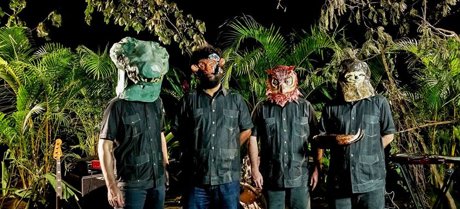

Señor Loop est un groupe panaméen de rock alternatif qui a réussi à se constituer un public fidèle à l’international,
en dehors des circuits officiels de l’industrie musicale.
Au cours de ses deux décennies d’existence, le groupe est devenu la voix de l’optimisme, de la résistance et de la résilience pour toute une génération,
remplissant plus de concerts localement que tout autre groupe de son genre.
membres du groupe
- Iñaki Iriberri (Guitars, Keyboards and Battery)
- Carlos Ucar (Bass)
- Rodrigo Colon Sanchez (Vocals and Guitars)
ici une chanson :D